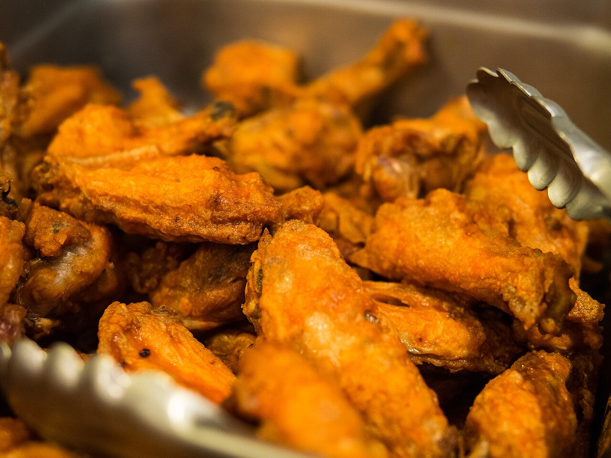

a long oneThe flat and the drum
also: Flats against drums

A chicken wing has three joints and yields two pieces a kitchen will sell: the drumette, which is the humerus with the meat pushed to one end, and the flat, which is the two-boned middle section carrying most of the skin. The tip goes to stock. One bird gives one of each per wing, in a fixed ratio nobody can change, which is the whole economics of the argument: a counter can let you order all flats, but it cannot buy a bird that grows two of them. Federal regulation names the drumette and declines to name the flat. Survey respondents prefer the drum by a wide margin and split sharply by who is answering. No public price series prices one piece against the other.
The arithmetic
Cut the wing at both joints and you have three pieces. Two get sold, one gets boiled. Every whole wing therefore yields exactly one drumette and exactly one flat. An order of twenty is twenty pieces, ten birds' worth of one wing each, and left alone it arrives ten and ten.
Inference — that fixed one-to-one is why 'all flats' is the only common wing request that costs the seller something real. Every other modification — sauce, heat, extra crisp, dip on the side — changes what leaves the kitchen. This one changes what is left in it.
What the government calls them
Title 9 of the Code of Federal Regulations, section 381.170(b), defines the cuts. Item (7): "'Wings' shall include the entire wing with all muscle and skin tissue intact, except that the wingtip may be removed." Item (18): "'Wing drummette' consists of the humerus of a poultry wing with adhering skin and meat attached." Item (19): "'Wing portion' consists of a poultry wing except that the drummette has been removed."
The flat has no federal name. It is defined by subtraction — what is left of a wing once the drumette is gone — and spelled 'drummette' with two m's on the way there. Inference — the counter's vocabulary ran ahead of the regulator's, which is usual, and the regulator has not caught up.
What the counter calls them
Flat, drum, drumette, party wing, wingette, mid-joint. A grocery bag labelled party wings holds both pieces already split. A counter that asks 'flats or drums?' is offering something most places will not, and a menu line reading ALL FLATS +$ is telling you the same thing in money.
Who prefers which
CivicScience put the question to 6,093 US consumers and published the result on 5 June 2014: 45% of wing-eaters prefer drums, 29% the flats, and 26% like both equally.
The splits are sharper than the topline. Men chose drums over flats 40% to 20%; women 29% to 24%. Black respondents went the other way, 43% for flats against 30% for drums. Hispanic respondents went hardest for drums, 47% to 16%. Self-described cooking enthusiasts were 32% more likely than average to choose flats; sports enthusiasts chose drums 40% to 17%.
That survey is twelve years old as of 2026 and I found no newer public one at the same sample size. Read it as the best available figure, not the current one.
The case for the flat
Two thin bones, and between them a strip of meat under a wider sheet of skin than the drumette carries for its weight. Fry it and more of the piece is crackle; sauce it and more of the piece is sauced, because the surface-to-meat ratio is higher. It pulls apart: twist the bones out and the meat comes free in one piece. Tradition holds — the flat is the cook's cut, and the CivicScience finding that cooking enthusiasts skew toward it is consistent with that.
The case for the drum
One bone, a handle at the narrow end, meat pushed into a lump at the other. It eats in two bites without engineering, it dips one-handed, and it holds heat longer because the mass is thicker. Tradition holds — the drum is what a plate of wings looks like in a photograph, which is not nothing when the wings are being sold.
What a wholesaler pays
USDA Agricultural Marketing Service, Weekly National Chicken Report, for 7 to 11 September 2026: Wings – Whole traded at a weighted average of 110.02 cents per pound, in a range of 82.00 to 136.00, on 507,000 pounds, down 2.35 cents from the previous week's 112.37. In the same table drumsticks ran 55.35 cents, boneless-skinless breast 121.35, and backs and necks stripped 10.91.
The series prices the wing whole. There is no line for a flat and no line for a drumette. USDA's retail report is the same: it carries 'Party Wings, Flats and Drums' as one item — 2,022 stores advertising conventional fresh at a weighted $3.27 per pound in the week of 5 to 17 September 2026 — and prices V-Cut Wings separately, but never a flat on its own.
So the premium a bar charges for all flats has no public benchmark behind it. I could not obtain a foodservice price list that separates the two cuts; the distributors that publish case prices refused this project's requests on 16 September 2026, and the subscription series that poultry traders use, Urner Barry's, is not open. That absence is itself the answer to 'what does a flat cost' — nobody publishes it.
What a shop does with the drums
Inference — a counter that sells all-flats orders has three ways out, and they are all visible on menus. It can buy pre-separated flats from a processor, paying whatever that costs and leaving the drum problem upstream. It can charge an upcharge large enough that the drums it is left holding are already paid for. Or it can move the drums somewhere else on the menu — the mixed basket, the lunch special, the platter, the dry-rub tray — and price those to clear.
The same logic runs in reverse at a shop that sells mostly drums, which then has flats to move. Neither shop is doing anything unusual; it is the arithmetic of a bird with one of each.
The tip
The third segment goes by wing tip, flapper or pointer. It is mostly skin, cartilage and bone, and it is where a kitchen's stock comes from. Some shops leave it attached to the flat and sell the two-piece section as it comes off the bird, which changes the count on the plate and the price per pound in the buyer's favour or the seller's, depending how the menu is written.
The particulars
| kind | essay |
|---|---|
| region | The United States |
| confidence | high · updated 2026-09-16 |
Who it runs with
Who talks about it
Pictures

{kind=link}
{kind=link}
Where we got it
- 9 CFR 381.170 — Standards for kinds and classes, and for cuts of raw poultry · link
- Chicken Wing Debate: Drums or Flats? — John Dick · link
- Weekly National Chicken Report (AMS_3646), report for 9/7/2026 to 9/11/2026 · link
- Weekly Grocery Store Chicken Feature Activity (AMS_2756), Fri Sep 11 2026, ads ending 9/5/2026 to 9/17/2026 · link
- Buffalo wing · link
- Chicken wing · link
Where it came from: Cited a source we name · Harvested pulled from an open dataset · Tradition what the tradition says, hedged · Inference this project's reasoning · Field somebody stood there. This record as JSON.